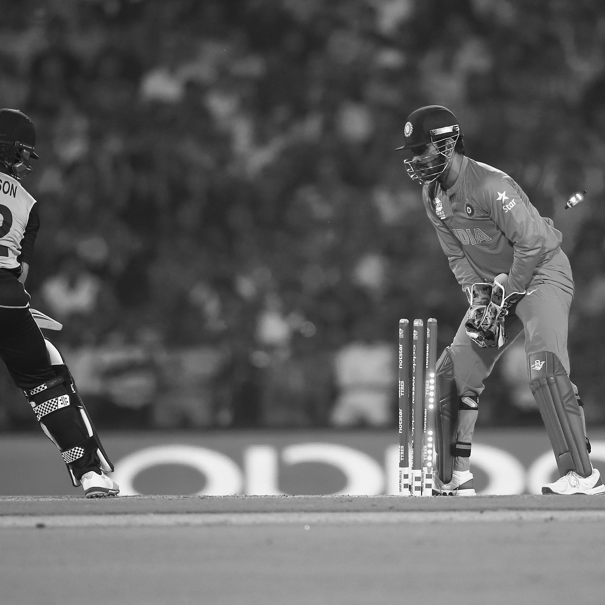

THALA FOR A REASON
The man behind the wickets

Timeline of THALA'S life
- Born: July 7, 1981, in Ranchi, Bihar (now in Jharkhand), India.
- Cricket Debut:
- ODI Debut: December 23, 2004, against Bangladesh.
- Test Debut: December 2, 2005, against Sri Lanka.
- T20I Debut: December 1, 2006, against South Africa.
- Captaincy:
- Named Captain of the Indian Cricket Team in limited-overs formats in 2007.
- Led India to victory in the inaugural ICC World Twenty20 in 2007.
- 2008: Led the Indian team to victory in the CB Series in Australia.
- 2009: Guided India to the No. 1 ranking in Test cricket for the first time.
- 2010: Led Chennai Super Kings (CSK) to the Indian Premier League (IPL) title. Story of Becoming Thala Began.
- 2011:
- Captained India to victory in the ICC Cricket World Cup, with the final held on April 2, 2011.
- Awarded the Rajiv Gandhi Khel Ratna India's highest honor in sports.
- 2013: Led CSK to another IPL title.
- 2014: Announced retirement from Test cricket in December.
- 2016: Stepped down as captain of the limited-overs formats.
- 2018: Retired from international T20 cricket.
- 2019:
- Led CSK to another IPL title.
- Announced retirement from international cricket on August 15, 2020.
- Post-Retirement: Continued to be associated with CSK in the IPL.
THALA'S TROPHY CABINET
ICC World Cup 2011
Captained India to their second World Cup triumph after 28 years. His iconic six to win the final against Sri Lanka at Wankhede Stadium is etched in cricket history forever.
ICC T20 World Cup 2007
Led a young Indian team to victory in the inaugural T20 World Cup in South Africa. This triumph marked the beginning of India's dominance in limited-overs cricket.
ICC Champions Trophy 2013
Guided India to Champions Trophy glory in England, defeating the hosts in a rain-affected final. This made India the first team to hold all three ICC trophies simultaneously.
IPL Championships
Led Chennai Super Kings to 5 IPL titles (2010, 2011, 2018, 2021, 2023) as captain. Under his leadership, CSK became the most consistent team in IPL history.
CB Series 2008
Led India to a historic tri-series victory in Australia, defeating the mighty Australian team on their home turf. This was a statement of intent from the new captain.
Asia Cup Victories
Won the Asia Cup twice as captain (2010, 2016), showcasing his tactical brilliance in subcontinental conditions. His calm leadership under pressure defined these campaigns.
"Face the failure, until the failure fails to face you."
--MAHENDRA SINGH DHONI